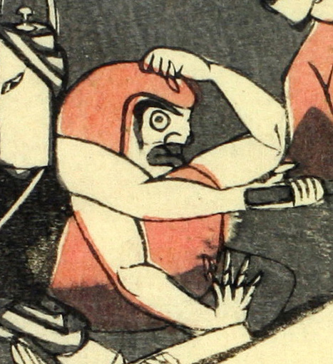

達磨の化物。達磨に腕が生えている。
著作者：江戸川北輝／出典：親書誌：U426_nichibunken_0074：本朝振袖之始素盞鳥尊妖怪降伏之圖；ホンチョウフリソデノハジメスサノオノミコトヨウカイゴウフクノズ／日付：2005／資源識別子：U426_nichibunken_0074_0009_0000
Copyright (c)2010- International Research Center for Japanese Studies, Kyoto, Japan. All rights reserved.